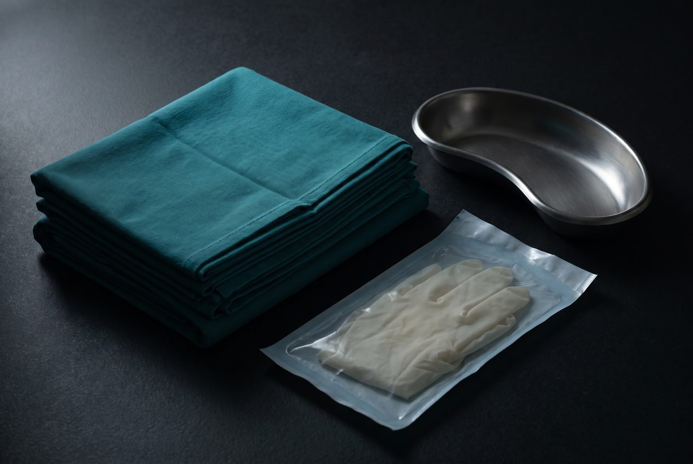

Stop blood thinners seven days out
Cease any blood-thinning medication at least 7 days before your procedure. Worth discussing with your GP or specialist first. If you’re unsure, call 1800 SNIPME or email info@vasectomyaustralia.com.au.
1800 SNIPME · 1800 764 763
info@vasectomyaustralia.com.au
252A Magill Rd, Beulah Park SA 5067

Home / Patient information
Deciding on a vasectomy can feel daunting. It needn’t. Most men tolerate the procedure very well and recover quickly — and there is nothing here you won’t be told in person first.
Your visit, end to end
Consultation and procedure happen on the same day. You arrive, you talk it through, it’s done, and you drive yourself home.
Your doctor sits down with you first. Four things get covered, and none of them are rushed.
You can have a free phone consultation with your doctor first, with no obligation to go ahead. Call 1800 SNIPME to arrange one.

You’ll meet the nurse assisting your doctor, get comfortable on the bed with a sheet over you, and the area is cleaned with betadine to reduce the chance of infection.
A fine needle numbs the skin of the scrotum — most men barely notice it. A single tiny opening is then made at the front of the scrotum by spreading the tissue rather than cutting it, which is what “no scalpel” means. Further local anaesthetic goes in around each vas deferens; that part can feel uncomfortable for a couple of seconds.
Both sides are reached through that same opening. When it’s done, the opening is closed with steri-strips. No stitches, and you’re free to go.
Watch the procedure explained
You go home and rest for the remainder of the day. Most men feel back to normal in about seven days.
You’ll leave with post-operative instructions, your doctor’s contact details in case anything worries you, and a pathology request form for the semen analysis you’ll need at three months.
Read the full recovery guide

Preparing for the day
None of it is difficult, but the lifting one genuinely matters — it is the single biggest thing you control.
Cease any blood-thinning medication at least 7 days before your procedure. Worth discussing with your GP or specialist first. If you’re unsure, call 1800 SNIPME or email info@vasectomyaustralia.com.au.
Shave the scrotum with a razor on the morning of your procedure. Your booking confirmation includes a diagram showing exactly the area to cover — ask us if anything is unclear.
If your job is physical, arrange time off or light duties with no heavy lifting — anything involving straining — for 7 days afterwards. This is what most reduces your risk of a scrotal haematoma.
You’ll be sent an electronic consent form by SMS three days before your procedure. Read and sign it in advance so there’s nothing to do on the day.
What it costs
Based on the fee recommended by the Australian Medical Association. A $100 deposit secures your booking, with the $730 balance due on procedure day.
Fees and Medicare rebates in fullBefore you book
A vasectomy is a simple procedure where the vas deferens (vas) is cut to cause sterilisation in a male. The vas is a tube that carries sperm from the testicles where it is made to the penis. On the way, sperm is joined by semen, so your ejaculate contains both. Sperm makes up a very small percentage — less than 5%. Because we are only stopping sperm, most men will not notice any change in the volume of their ejaculate after a vasectomy.
A vasectomy takes between 15 and 20 minutes, depending on the procedure.
There are two ways to categorise a vasectomy procedure.
Traditional or no-scalpel. The traditional way uses a scalpel to make an incision on each side of the scrotum to reach the vas. The no-scalpel technique involves only one access point, opened by blunt dissection, to reach the vas from both sides. It carries less chance of complications like bruising and bleeding, and offers a quicker recovery.
Open-ended or closed-ended. Open-ended vasectomy leaves the vas attached to the testis open to allow sperm release into the scrotum, which reduces congestion and pressure — think of a kinked hose on a running tap. Closed-ended vasectomy clamps the testicular end with a clip or suture.
Yes, it is safe to drive home after a vasectomy.
We only offer local anaesthetic for our vasectomy procedure. A urologist can give a referral if you prefer sedation or general anaesthetic options.
Yes, you can reverse a vasectomy; however, the process is costly and not covered by Medicare. If you are asking this question, you may need more time before deciding on permanent contraception via vasectomy.
All surgical procedures have some sort of risk, yet we do all we can to reduce the rate of complications. We believe our patients should be aware of all risks, and we have outlined potential complications in your consent form.
After a vasectomy, there are some symptoms which include:
Less common complications include:
A vasectomy procedure does not mean immediate sterilisation. You must consider yourself fertile until you are informed the vasectomy was a success and a semen analysis is performed. The semen analysis is done approximately three months post-vasectomy to ensure all residual semen has cleared and your ‘pipes are clean.’
It depends on whether your job involves heavy lifting. If not, you can return immediately; however, if it does, you may need to take some time off or request light duties for the first week. A medical certificate can be written if required.
Generally, you can resume sexual activity after a week, but you must consider yourself fertile until notified otherwise.
A GP referral is not necessary.
Some men recover quite quickly from vasectomy while others may take up to 2 weeks. The average time to feeling back to normal is about 7 days.
Technically, “laser” vasectomy does not exist. Some vasectomists use a hyfrecator to divide the vas, which may confuse people; however, it is not “laser vasectomy”.
There is good news and bad news. The bad news: you won’t be able to use private health insurance with us, because we perform vasectomies in medical centres rather than in a private hospital. Private health insurance is only of benefit when your procedure is performed in a hospital or day surgery by a urologist.
The good news: it will almost certainly work out more affordable here. See the full cost comparison.
Ready when you are
No GP referral needed. Free phone consultation first if you’d rather talk it through.